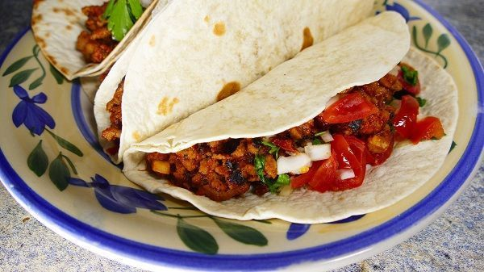

TACOS MEXICANOS receta original

Los tacos mexicanos son una popular receta de este país americano.
Consiste en carne, generalmente de ternera (o res como lo llaman allí)
o de pollo, cocinada junto a tomate y después introducida dentro de una
tortilla de maíz o trigo. Finalmente se adereza con pico de gallo, una
salsa típica del país. Un plato con mucha personalidad y que sin duda sabe
a méxico. Aquí, lo haremos con carne picada aunque, en realidad se hace con
trozos de carne cortadas en tiras, cocinada durante dos horas o más. Así que
se puede decir que aunque se parezca, no es 100% mexicana. Pero para acelerar
el proceso que, todos tenemos unas vidas muy ajetreadas ¡haremos una versión mucho
más rápida e igualmente sabrosa!
Ingredientes
Ingredientes para 6 personas
- Para los tacos mexicanos:
- 6 tortillas de trigo o de maíz
- 350g de carne picada de ternera o de pollo
- 4 dientes de ajo
- 500g de tomates
- sal y pimienta
- aceite
- Opcionalmente puedes añadir algo de queso rallado a cada taco
- Para hacer el pico de gallo:
- 1 cebolleta pequeña picada
- 1 jalapeño. En España es fácil encontrarlos en conserva en los supermercados. También puedes sustituirlo por 1 pimiento verde «chile»
- 2 tomates medianos
- Unas hojas de cilantro
- 1/2 lima o 1/2 limón
Preparación
- Para comenzar con nuestros tacos mexicanos, picamos los ajos y los cocinamos a fuego muy suave durante 1 minuto. Que no coja color
- Añadimos el medio kilo de tomates, ya pelados y troceados y subimos la potencia del fuego. Salpimentamos y cocinamos durante un rato. El tomate soltará agua, debe evaporarse toda que, puede tartar un rato. Una vez evaporada dejamos cocinar a fuego suave mientras removemos constantemente, durante 5 minutos más, para que coja buen sabor
- Mientras se evapora el agua de los tomates, preparamos el pico de gallo. El pico de gallo es una salsa que le viene al pelo a los tacos mexicanos. En un bol echamos toda la verdura de esta salsa bien picada. Añadimos el zumo de 1/2 lima o de medio limón y removemos bien. Dejamos reposar
- Cuando se haya cocinado un poco el tomate, añadimos la carne picada que hayamos elegido. Echamos su parte de sal y pimienta y cocinamos a fuego fuerte. Con una cuchara de madera, vamos removiendo todo y desmenuzando la carne picada, para que no que queden trozos grandes. De hecho, cuanto más finos queden mejor. Así que mezclamos con el tomate y el ajo, mientras la desmenuzamos y cocinamos la carne
- Una vez se haya cocinado, ¡ya está lista! Calentamos una a una las tortillas por sus dos caras en una sartén a fuego medio. Después ponemos encima unas cucharadas de la carne, aderezamos con un poco de pico de gallo, las envolvemos dándole la forma característica de taco ¡Y ya está listo!. Opcionalmente puedes espolvorear también queso rallado por encima
¡Y así de fácil y rápido tienes unos tacos mexicanos que están riquísimos! Puedes acompañarlos de una buena salsa guacamole u otra salsa mexicana a tu gusto. Por último, recalcar que los auténticos tacos se hacen con carne mechada que se ha dejado cocinar junto con el tomate durante más de dos horas. Pero esta es una versión rápida que también da muy buenos resultados. ¡Espero que te guste!
Pagina principal